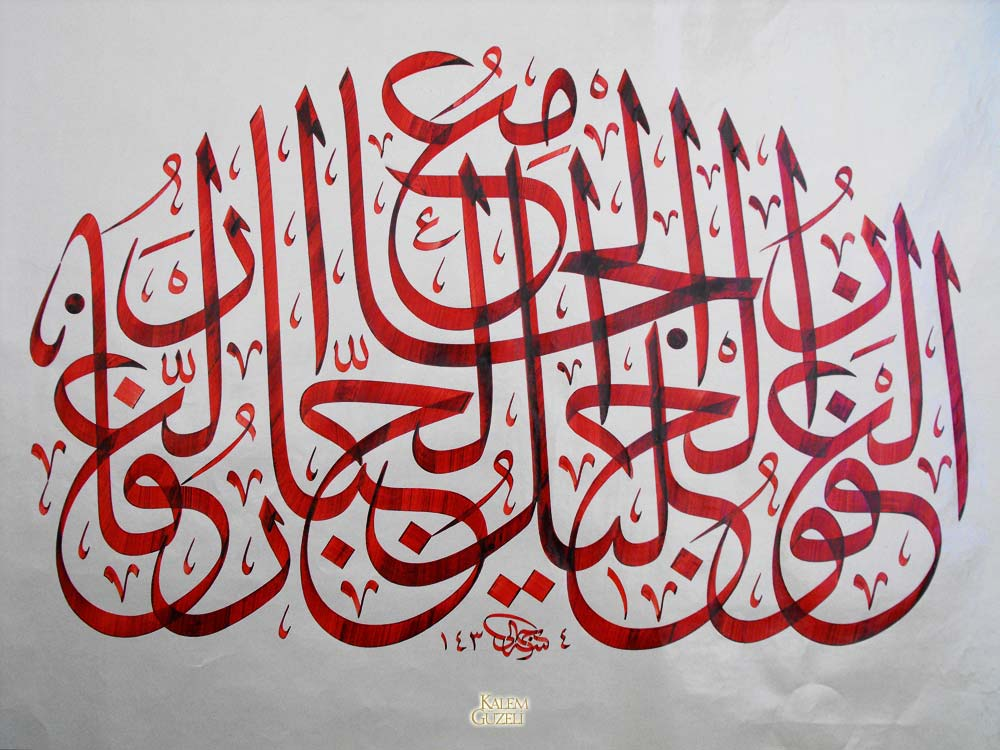
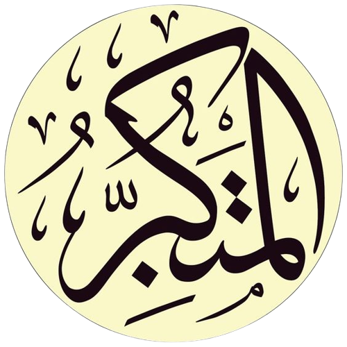

Haşr Suresinin 23. âyetini takip eden okuyucu şunu sorabilir: "Sıradaki isim el-Azîz değil mi?" Doğru, ama bu isim surenin en sonunda bir daha geçtiği için asıl yeri daha sonra gelecek, 8. gün...
Güzel isimler içinde birkaç tanesi insan için hiç de güzel isimler değil, ama Allah'a yakışıyor. Mesela el-Cebbâr insanlar için zorbalık, diktatörlük anlamına gelirken Allah için güzel ve gerekli bir sıfat: Her istediğini yaptıran, buyruğunu her şeye geçiren. 
Bu iki isim Allah için sadece bu âyette kullanılmış:
59:23 el-Cebbâr, el-Mutekebbir
buyruğunu her şeye geçiren, büyüklenmeyi hak eden
Diğer isim el-Mutekebbir de insanlar için olumsuz, Allah için gerekli, çünkü yalnız O büyüklenmeyi, kibirlenmeyi hak eder. 
Bu iki ismin bir arada geçtiği bir âyet daha var:
40:35 'alâ kulli kalbi mutekebbirin cebbâr
Allah, her böbürlenen zorbanın kalbini öylece mühürler
Diğer kullanımlar hep insanlar için ve hepsi olumsuz sıfatlar.